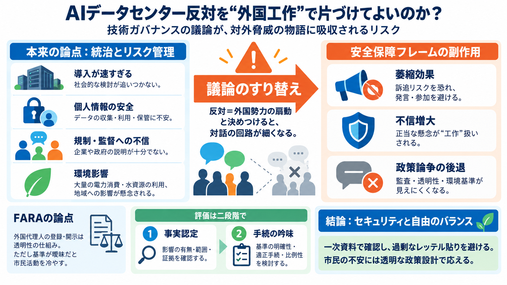

Foreign Influence in the Campaign against American AI, Part II: The Singham Ground Game | Bitcoin Policy Institute
Beyond the financial damage, the political terrain is shifting against the buildout. A Gallup poll in March 2026 found t…

AIデータセンターへの反対を「外国勢力のプロパガンダ」と位置づける動きが、国内の議論をどう変えるのかを整理します。
AIが急速に社会へ浸透する一方で、情報保護・規制・環境影響への不安が広がっています。記事は、その不安が「外国工作」という枠組みに回収される危うさを問題にします（安全保障へのすり替え）。
速すぎる導入／個人情報の安全／政府規制への不信／環境影響
反対を「中国などの扇動」と結びつけ、刑事・民事リスクを示す
技術・統治の論点を、対諜報（対外脅威）として一括処理すると、対話の回路が細くなります。記事の主張は「反対＝外国工作」という因果の飛躍に警鐘を鳴らすことです。
政策設計（透明性・監督・規制）として議論する
「反対者は操られている」と安全保障の物語へ変換する
FARA（外国代理人登録法）は、外国の代理人として活動する場合の登録・開示を求める枠組みです。記事は、「告発（登録の問題）が明確でないのに、安全保障の圧力だけが先行する」点を問題視します。
外国の代理人に該当する活動の透明化（開示）
意図・資金・指示の基準が曖昧だと、市民活動が萎縮し得る
記事によれば、司法省は「外国勢力の目的を推進するような公的活動（デモ等）をすれば、通知義務や逮捕・起訴につながり得る」と警告したとされます。市民の正当な関心まで対象化されるリスクが論点です。
通知義務→刑事・民事の制裁につながり得る
「意図」や「関係性」の基準が不明確だと広く解釈される恐れ
記事は、トランプ大統領がSNSでAI・データセンター反対を「裏切り／反逆／陰謀」や「中国に喜ぶ」などに結び付ける投稿を繰り返したと指摘します。根拠の提示が十分でないまま外敵ストーリーが固定化すると、国内の論点が見えにくくなります。
政策論争が党派・対外脅威の物語に吸収される
規制設計・監査・環境基準などの議論が後景に退く可能性
記事が参照する世論調査では、「AI反対そのもの」より「導入の速さ」「個人情報の安全」「政府規制への不信」などが中心とされます。反対は党派やイデオロギーに偏りが小さい点も、単純な「外国扇動」モデルと整合しにくいと述べます。
速さ／プライバシー／規制不信（統治とリスク管理）
幅広い層の反対を「外敵の操り」と説明し切れない
記事（筆者）は、外国影響の有無をただちに「証明済み」とせず、まず事実認定、その次に基準の透明性と比例性で判断すべきだと示唆します。順序を誤ると、誤った萎縮と不信が広がります。
外国の影響があるか／どの範囲で／どんな証拠か
基準が明確か／適正手続でコントロールされるか／比例性はあるか
国家安全保障の論理が、言論・集会の抑制に近づくと、当事者は逮捕を恐れて沈黙し、政府への不信が増える可能性があります。目的が正しくても、手段が過剰なら民主的な対話は弱まります。
市民が「訴追リスク」を意識して参加・発言を避ける
正当な懸念が“工作”として扱われ、対話が壊れやすい
記事と筆者の問題提起を、法・政治・世論・リスク・懐疑・倫理に分けてまとめます。
通知義務・制裁の明確性／予見可能性がカギ
外敵ストーリーで政策論争が後退し得る
レッテル貼りは政府と市民のコミュニケーションを断つ
透明性・監督・検証が進まず、不信が拡大する恐れ
証拠不足なら全面否定もしない。追加資料で検証が必要
市民の正当な懸念を「裏切り」に結ぶのは重い問題
この抜粋だけでは、主張の裏付けの強さ（DOJ文書の原文、対象活動の定義、証拠の種類・量、訴訟の争点と結果）を確定できません。外国影響の可能性をゼロと断言できない以上、判断は一次資料に依存します。
一次資料（DOJ原文／議会書簡／裁判記録／証拠開示の状況）
事実認定→手続・比例性の順に精査して結論を急がない
AI時代の統治には、セキュリティと自由のバランス、そして市民の正当な不安に応える政策設計が不可欠です。国家安全保障の言説が技術ガバナンスを覆い隠すなら、対話と信頼は損なわれます。
事実認定と基準の透明性を一次資料で確認する（公的説明と手続）。
比例性（目的に対して手段が過剰でないこと）を担保し、萎縮効果を避ける。
Beyond the financial damage, the political terrain is shifting against the buildout. A Gallup poll in March 2026 found t…
Letter from Chairman Smith of the House Ways and Means Committee to The People’s Forum alleging the organization of “usi…
requested a Department of Justice (DOJ) briefing on whether certain far-left and antisemitic groups may have violated th…
A recent report uncovers a multi-year campaign waged across multiple vectors of foreign influence. Among them is a netwo…
CHINESE BOT FARM CAUGHT RED-HANDED TRYING TO INFLUENCE HEATED AI DATA CENTER DEBATE Bitcoint Policy Institute map of pr…